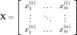
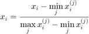
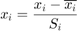
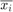
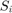
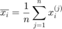
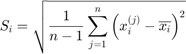

CODES / fit / meta
_A general meta-modeling class which contains a wide array of options
Contents
Syntax
- meta=CODES.sampling.meta(x,y) builds a meta-model based on training set (x,y).
- meta=CODES.sampling.meta(...,param,value) uses a list of parameters param and values value (c.f., parameter table)
Scaling
Scaling input data is always good practice. For example, a training set with n samples of dimension m is defined as:

Two main scaling are proposed:
"Square" scaling

"Circle" scaling

where  and  are respectively sample mean and standard deviation such that:


Parameters
| param | value | Description |
|---|---|---|
| 'scale' | {'square'}, 'circle', 'none' | Define scaling method for the inputs (c.f., Scaling for details) |
| 'UseParallel' | logical, {false} | Switch to use parallel settings |
Properties
- X: Unscaled training samples
- Y: Training values
- labels: Training labels (used for classification only)
- X_sc: Scaled training samples
- dim: Training samples dimension
- n: number of training samples
- scalers: Scaling factor to account for in gradient calculations
Methods
Methods available for the class meta are described here
Copyright © 2015 Computational Optimal Design of Engineering Systems (CODES) Laboratory. University of Arizona.
|
|
Computational Optimal Design of Engineering Systems |

|